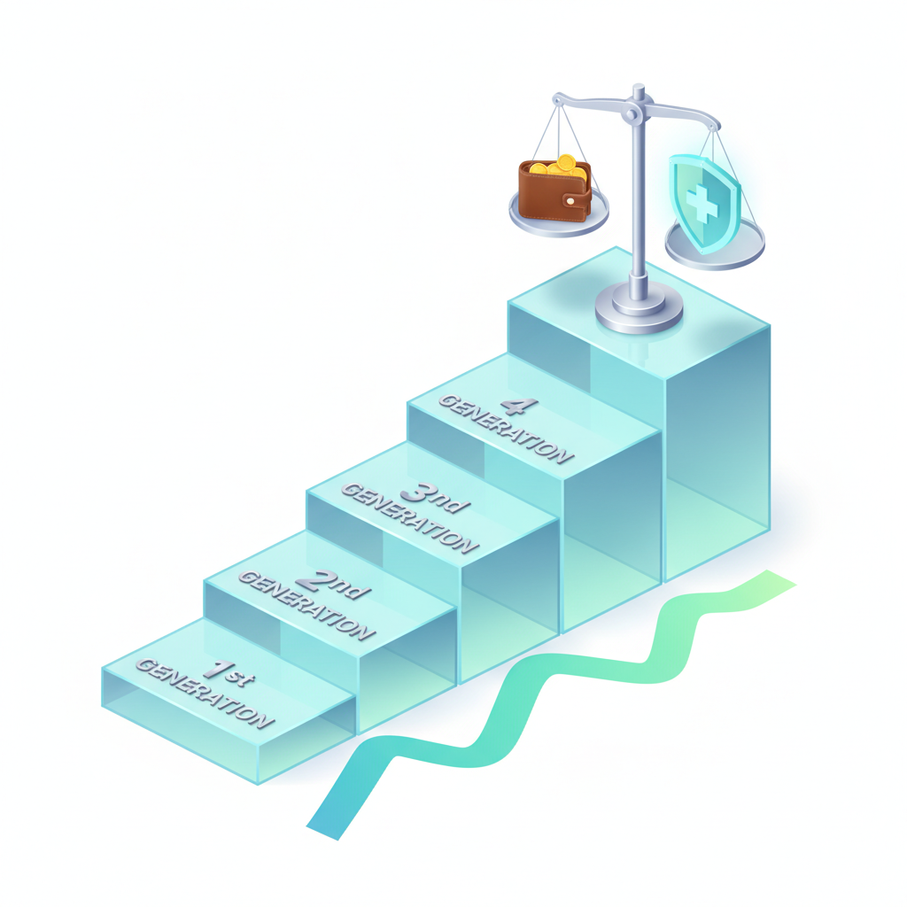

실손보험 1~4세대 차이 비교 — 가입 시기별 자기부담금 계산표와 내 세대 판별 체크리스트
국민 10명 중 8명이 가입하여 '제2의 건강보험'으로 불리는 실손의료보험은 언제 가입했느냐(가입 연월)에 따라 1세대부터 4세대까지 자기부담금 비율과 갱신 보험료 구조가 완전히 달라집니다. 1세대(2009년 9월 이전)는 자기부담금이 사실상 0원(또는 5천 원)인 반면 매년 갱신 폭이 매우 가파르고, 4세대(2021년 7월 이후)는 보험료가 최대 70% 저렴하지만 급여 20%·비급여 30%의 자기부담률과 비급여 이용량에 따른 보험료 차등제(할증제)가 적용됩니다.
병원 치료를 자주 받지 않는 건강한 사람이라면 비싼 1·2세대를 유지하는 것이 과도한 보험료 낭비가 될 수 있고, 반대로 만성질환이나 비급여 치료가 잦은 분은 섣불리 4세대로 전환했다가 보장 혜택이 대폭 축소될 수 있습니다.
금융감독원 표준약관 기준 세대별 비교표와 실제 병원비 발생 시 환급금 계산표, 그리고 내 보험 증권 세대 판별 체크리스트를 확인해 보세요.
실손의료보험 보험 증권 약관과 병원비 진료비 영수증 정산 서류 / AI 제작 이미지
01 | 4,000만 국민이 가입한 제2의 건강보험 실손의료보험의 세대별 변천사
실손의료보험은 피보험자가 질병이나 상해로 병원 치료를 받았을 때 국민건강보험의 법정 본인부담금과 비급여 의료비를 실손으로 보상해 주는 민간 보험입니다.
초기 실손보험은 의료 이용의 도덕적 해이를 막는 장치가 부족하여 손해율이 급등했고, 이에 금융감독원과 보험업계는 2009년 표준화(2세대), 2017년 착한실손(3세대), 2021년 7월 이용량 연동 차등제(4세대)로 약관을 개정해 왔습니다.
이에 따라 같은 실손보험이라 하더라도 가입 시점에 따라 보상 범위, 자기부담금, 갱신 주기, 비급여 특약 조건이 완전히 다르게 적용되므로, 소비자는 자신이 어느 세대에 속해 있는지 정확히 인지해야 손해를 보지 않습니다.
02 | 가입 시기별로 나뉘는 1세대·2세대·3세대·4세대 실손보험 구분 기준
본인이 가입한 실손보험의 세대는 보험 계약 체결일을 기준으로 칼같이 분류됩니다.
1세대 (구실손, 2009년 9월 이전 가입) : 표준화 이전 상품으로, 입원의 경우 100% 전액 보상(자기부담금 0원), 통원은 5천 원 공제 후 전액 보상되는 파격적인 보장성을 지닙니다.
2세대 (표준화 실손, 2009년 10월 ~ 2017년 3월 가입) : 금융당국이 표준화한 상품으로 입원 시 90% 보상(자기부담 10%), 통원은 의원 1만 원·병원 1.5만 원·종합병원 2만 원 또는 10~20% 공제 방식이 적용됩니다.
3세대 (착한실손, 2017년 4월 ~ 2021년 6월 가입) : 기본형(급여 10~20%, 비급여 20% 공제)과 3대 비급여 특약(도수치료·비급여 주사·비급여 MRI, 자기부담 30%)으로 분리된 구조입니다.
4세대 (현재 판매 중, 2021년 7월 이후 가입) : 급여는 주계약(자기부담 20%), 비급여는 전액 특약(자기부담 30%)으로 완전 분리되었으며, 직전 1년간 비급여 보험금 수령액에 따라 차년도 비급여 보험료가 할인되거나 최대 300%까지 할증되는 방식입니다.
03 | 1~4세대 실손보험 급여·비급여 자기부담금 및 보장 한도 종합 비교표
각 세대별 보장 구조의 핵심 차이점을 한눈에 파악할 수 있도록 금융감독원 표준약관 기준으로 정리하였습니다.
| 구분 |
1세대 (구실손) |
2세대 (표준화) |
3세대 (착한실손) |
4세대 (현행) |
| 가입 시기 |
~2009년 9월 |
2009년 10월 ~ 2017년 3월 |
2017년 4월 ~ 2021년 6월 |
2021년 7월 ~ 현재 |
| 입원 자기부담금 |
0원 (100% 보장) |
10% 또는 20% (선택형) |
급여 10~20%, 비급여 20% |
급여 20%, 비급여 30% |
| 통원 공제금액 |
5,000원 공제 |
의원 1만 / 병원 1.5만 / 상급 2만 |
의원 1만~2만 원 or 10~20% 큰 금액 |
급여 1~2만 원 / 비급여 3만 원 |
| 3대 비급여 (도수 등) |
일반 통원 한도 내 보장 |
일반 통원 한도 내 보장 |
특약 분리 (자기부담 30%, 횟수 제한) |
특약 분리 (자기부담 30%, 연간 한도) |
| 갱신 주기 / 재가입 |
3년 또는 5년 / 없음 |
1년 / 15년 재가입 (13년 4월~) |
1년 갱신 / 15년 재가입 |
1년 갱신 / 5년 재가입 |
| 보험료 수준 |
가장 비쌈 (지속 급등) |
다소 비쌈 (손해율 연동) |
1세대 대비 약 50% 저렴 |
1세대 대비 약 70% 저렴 |
위 비교표에서 볼 수 있듯이 1세대와 2세대는 보장 혜택과 자기부담금 면에서는 압도적으로 유리하지만, 연령이 증가하고 갱신 시점이 도래할 때마다 보험료가 2배, 3배로 폭등하는 치명적인 단점을 안고 있습니다.
04 | 병원비 10만 원·50만 원·200만 원 발생 시 세대별 실수령 환급금 계산표
실제 병원 외래 진료 및 검사를 받았을 때, 각 세대별로 환급받는 실수령액이 얼마나 차이 나는지 구체적인 가상 예시로 계산해 드립니다.
| 가상 진료 상황 (동네 의원 외래) |
1세대 환급액 (5천 원 공제) |
2세대 환급액 (1만 원 공제 기준) |
3세대 환급액 (비급여 20%) |
4세대 환급액 (비급여 30%) |
상황 A : 감기·몸살 진료
급여 3만 원 + 비급여 2만 원 (총 5만 원) |
45,000원 환급
(본인부담 5,000원) |
40,000원 환급
(본인부담 10,000원) |
36,000원 환급
(본인부담 14,000원) |
24,000원 환급
(본인부담 26,000원) |
상황 B : 외래 통원 및 정밀 초음파
급여 5만 원 + 비급여 15만 원 (총 20만 원) |
195,000원 환급
(본인부담 5,000원) |
180,000원 환급
(본인부담 20,000원) |
160,000원 환급
(본인부담 40,000원) |
145,000원 환급
(본인부담 55,000원) |
상황 C : 비급여 도수치료 1회
순수 비급여 15만 원 단독 발생 |
145,000원 환급
(본인부담 5,000원) |
130,000원 환급
(본인부담 20,000원) |
105,000원 환급
(본인부담 45,000원) |
105,000원 환급
(공제 3만 vs 30% 큰 4.5만) |
단순 소액 외래 진료에서는 4세대 실손의 자기부담금이 다소 크게 느껴질 수 있지만, 수술이나 장기 입원 등 수백만 원 대의 고액 의료비가 발생하는 경우에는 4세대 역시 연간 본인부담금 상한제(급여 200만 원 한도)가 작동하므로 결정적인 파산 위험을 막아주는 안전판 역할을 충분히 수행합니다.

실손보험 세대별 보험료 부담과 의료비 보장 혜택의 균형을 나타낸 인포그래픽 / AI 제작 이미지
05 | 4세대 실손보험의 핵심 특징 — 직전 1년 비급여 이용량에 따른 보험료 차등제(할증·할인)
4세대 실손보험의 가장 혁신적이면서도 주의해야 할 제도는 바로 '비급여 보험료 차등 적용제'입니다.
이 제도는 비급여 의료를 전혀 이용하지 않는 대다수 선량한 가입자의 보험료 부담을 낮추고, 비급여 의료를 과도하게 많이 이용한 가입자에게 그에 상응하는 보험료를 부과하는 구조입니다.
직전 1년간 비급여 보험금을 0원 수령한 가입자는 차년도 비급여 보험료의 약 5% 내외를 할인받습니다. 반면 100만 원 이상 150만 원 미만 수령 시 100% 할증(2배), 150만 원 이상 300만 원 미만 수령 시 200% 할증(3배), 300만 원 이상 수령 시에는 최대 300% 할증(4배)이 적용됩니다. 단, 중증질환자(암, 뇌혈관, 심장질환 등) 및 희귀난치성 질환자는 할증 대상에서 제외됩니다.
06 | 도수치료·비급여 주사제·MRI 보장 범위와 청구 제한 기준의 차이
실손보험 손해율의 주범으로 꼽히는 3대 비급여 항목(도수치료·체외충격파·증식치료, 비급여 주사제, 비급여 자기공명영상 MRI)은 세대에 따라 청구 허들이 매우 큽니다.
1·2세대는 질병·상해 통원 한도(일 25만~30만 원) 내에서 의사의 소견이 있으면 연간 180회 한도로 넉넉하게 청구할 수 있었습니다.
그러나 3·4세대는 완전히 독립된 특약으로 분리되었습니다. 도수치료의 경우 연간 최대 350만 원, 50회 한도로 제한되며 매 10회 치료 시마다 증상 개선 및 통증 완화가 객관적으로 입증되어야 추가 10회가 보장됩니다. 비급여 영양 주사제 역시 식약처 허가 범위 내에서 치료 목적으로 투여된 경우에만 엄격하게 지급 심사가 이루어집니다.
07 | 1·2세대 기존 가입자가 4세대로 계약 전환할 때 득실 분석(보험료 vs 보장성)
매월 10만~20만 원이 넘는 1세대 구실손 보험료 청구서를 받아 들고 4세대로의 '계약 전환'을 고민하는 가입자가 급증하고 있습니다. 전환 여부를 판단하는 명확한 기준은 다음과 같습니다.
4세대 전환이 유리한 경우 : 연간 병원 방문 횟수가 1~2회에 불과할 정도로 건강한 분, 비급여 도수치료나 비급여 주사를 거의 맞지 않는 분, 은퇴 후 고정 소득이 줄어들어 매월 나가는 1·2세대 갱신 보험료가 가계 경제에 심각한 부담이 되는 분입니다.
기존 1·2세대를 끝까지 유지해야 하는 경우 : 허리 디스크나 관절 질환으로 정기적인 도수치료 및 비급여 물리치료가 필수적인 분, 만성질환이나 기저질환이 있어 지속적인 약 처방과 외래 검사를 받는 분, 향후 고령으로 인해 비급여 의료비 지출이 크게 예상되는 분입니다. 한 번 4세대로 전환하면 이전 세대로 절대 되돌릴 수 없으므로(계약 전환 철회 6개월 이내만 가능) 신중한 판단이 요구됩니다.
08 | 내 증권과 보험사 앱에서 가입 세대와 갱신 주기를 확인하는 3단계 순서
내가 가입한 실손보험이 몇 세대인지 가장 확실하게 확인하는 디지털 조회 순서를 안내해 드립니다.
· 1단계 (앱 접속) : 가입한 해당 보험사(삼성화재·현대해상·KB손보·DB손보 등) 모바일 앱에 로그인합니다.
· 2단계 (계약 상세 조회) : [마이페이지] → [내 보험 조회] → [계약 상세 정보]로 들어갑니다.
· 3단계 (담보명 및 갱신일 확인) : 담보 명칭에서 '기본형실손' 또는 '표준화실손', '3대비급여' 표기를 확인하고, 약관 개시일(최초 계약일)의 연월을 대조합니다.
금융결제원의 '내보험다보여' 누리집이나 '내보험찾아줌(Cont)' 서비스를 이용하면 여러 보험사에 흩어져 있는 실손 가입 내역을 한눈에 통합 조회할 수 있습니다.
09 | 실손보험 청구 전 서류 준비와 계약 유지 여부 결정 체크리스트
성공적인 실손보험 활용과 최적의 계약 관리를 위한 필수 점검 사항을 정리해 드립니다.
📄 병원비 청구 시 필수 구비 서류
· 통원 3만 원 이하 : 진료비 계산서·영수증, 진료비 세부내역서 (비급여 발생 시 필수)
· 통원 3만 원 초과 : 영수증 + 세부내역서 + 처방전(질병분류기호 질병코드 포함) 또는 통원확인서
· 입원 치료 : 영수증 + 세부내역서 + 입퇴원확인서 또는 진단서 (병명·입원 기간 명시)
💡 4세대 전환 전 셀프 진단 체크리스트
1. 최근 1년간 비급여 청구 총액 : 100만 원 이상 비급여를 청구했다면 4세대 전환 시 할증 대상이 될 수 있습니다.
2. 현재 월 납입 보험료 부담 수준 : 1·2세대 실손 보험료가 월 15만 원을 초과하여 해지를 고민 중이라면 해지 대신 4세대 전환을 고려하세요.
3. 가족력 및 지병 유무 : 혈압, 당뇨 등 정기 처방이 필요한 만성질환이 있다면 보장 한도가 큰 기존 세대 유지가 유리합니다.
4. 전환 철회 가능 기간 : 전환 후 6개월 이내에는 보험금 수령 이력이 없는 경우에 한해 기존 계약으로 원복 신청이 가능합니다.
#실손보험세대별차이
#실손보험1세대4세대비교
#실손보험자기부담금계산
#4세대실손보험료할증
#실손보험계약전환득실
#착한실손3세대
#도수치료실손청구한도
#실손의료비청구서류
#실손보험세대확인방법
#실손보험유지체크리스트